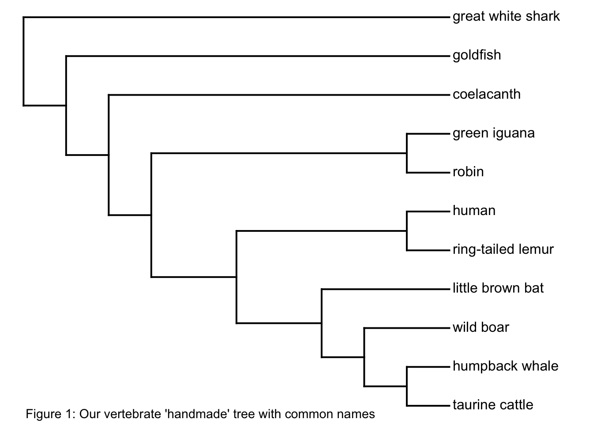
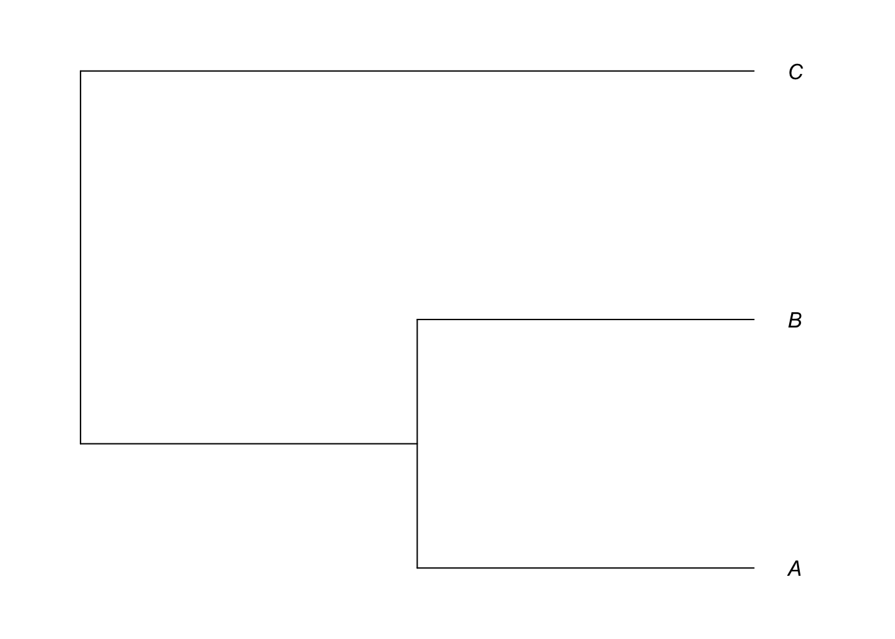
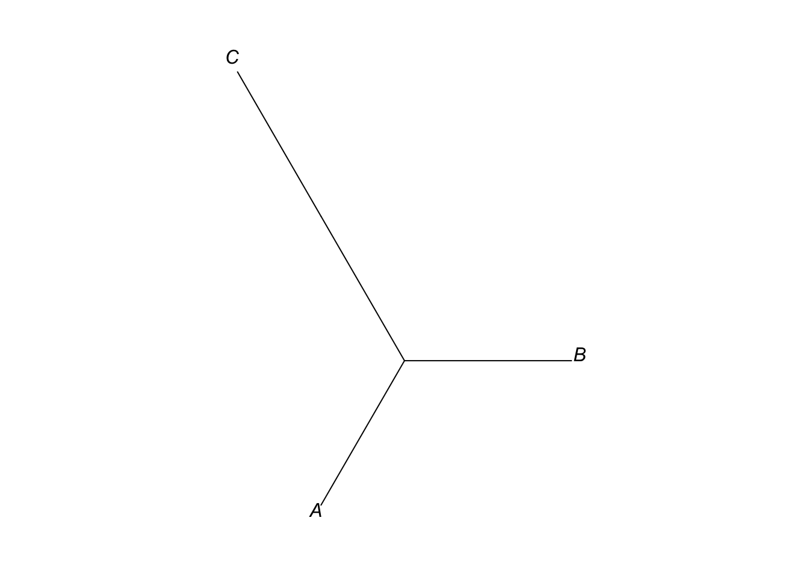
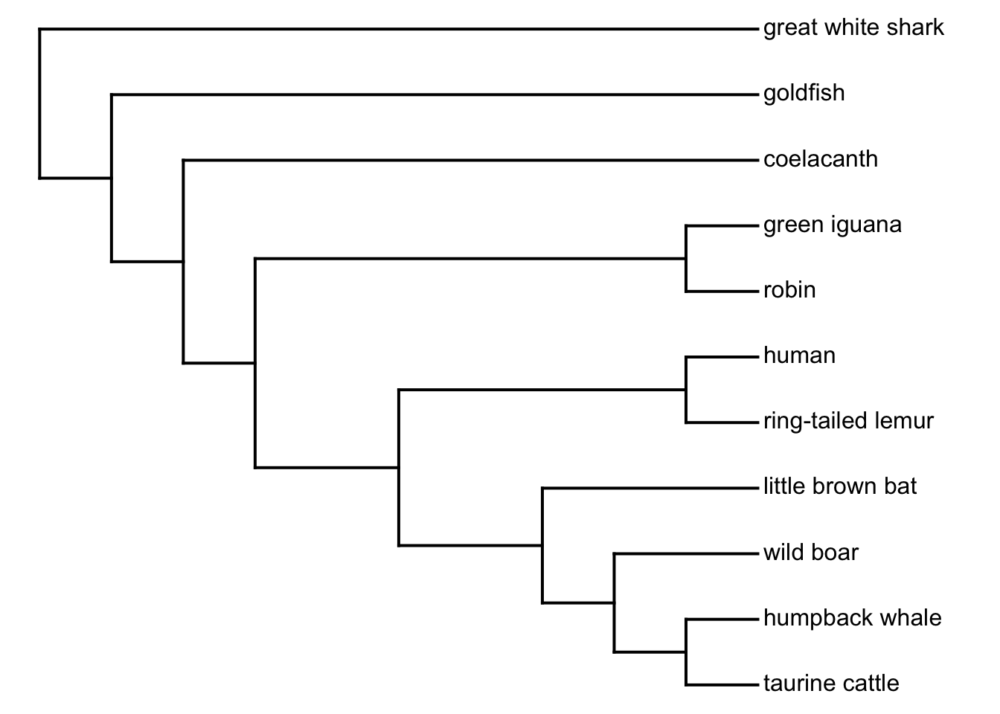
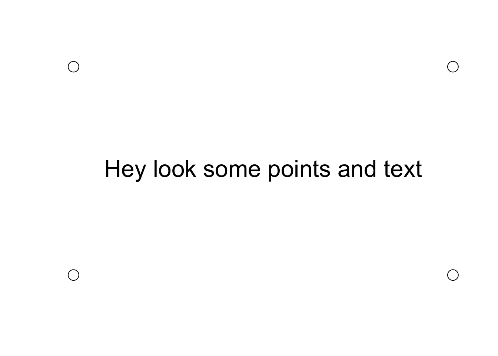
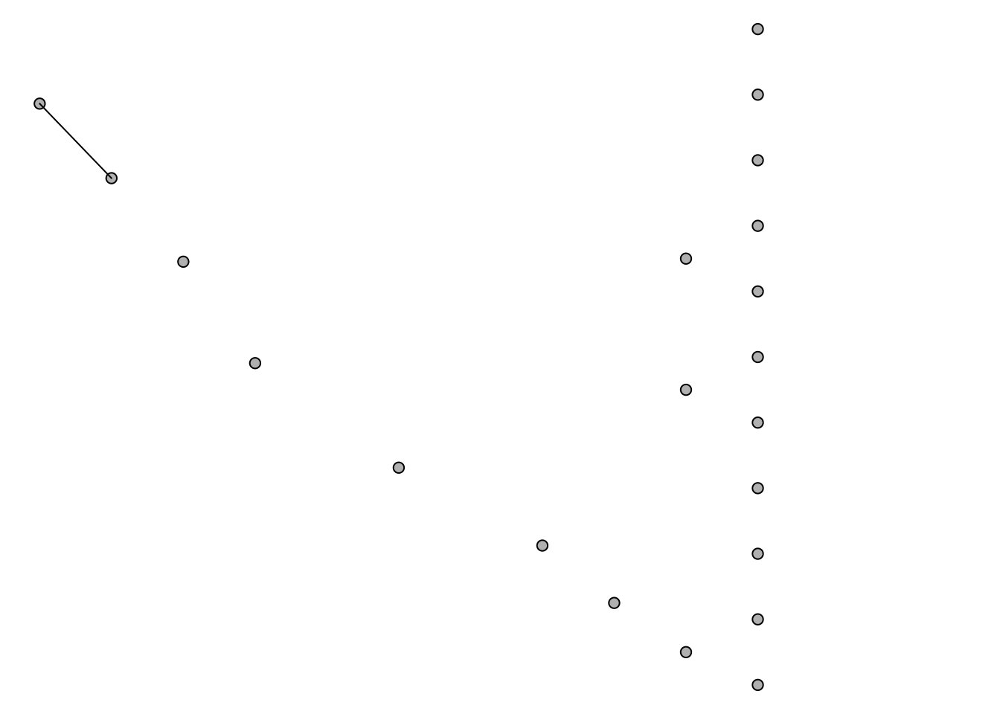
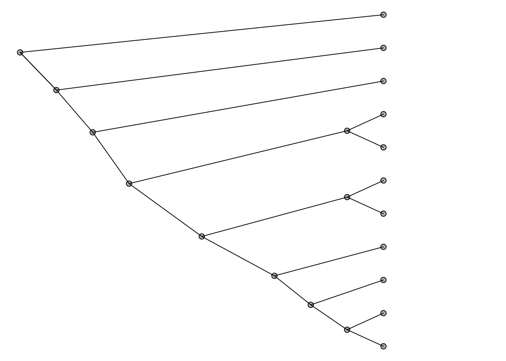
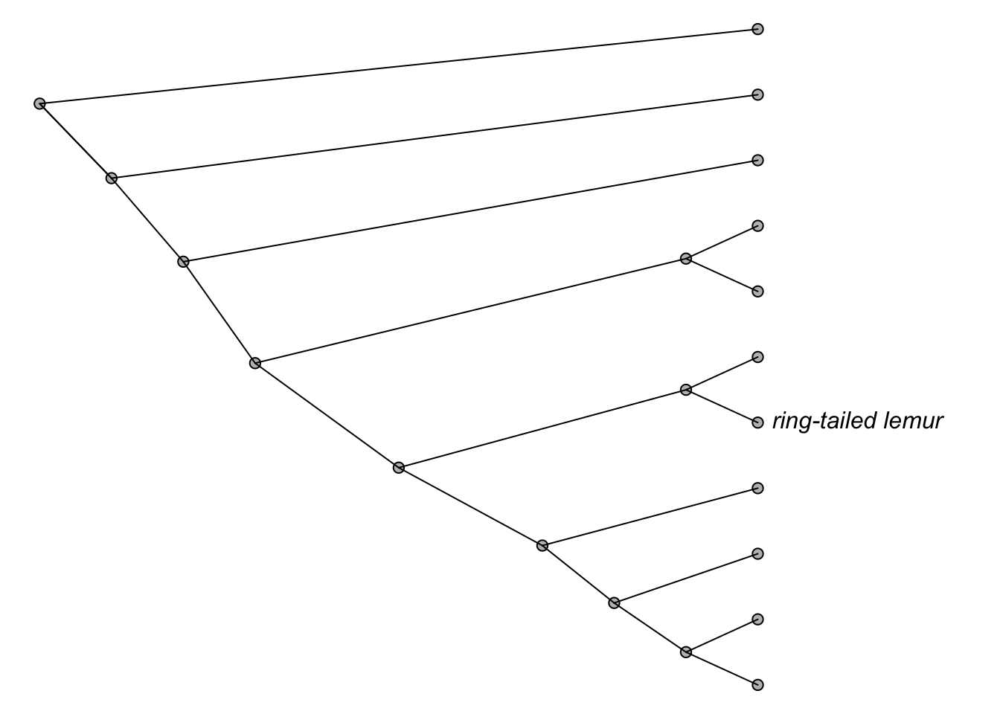
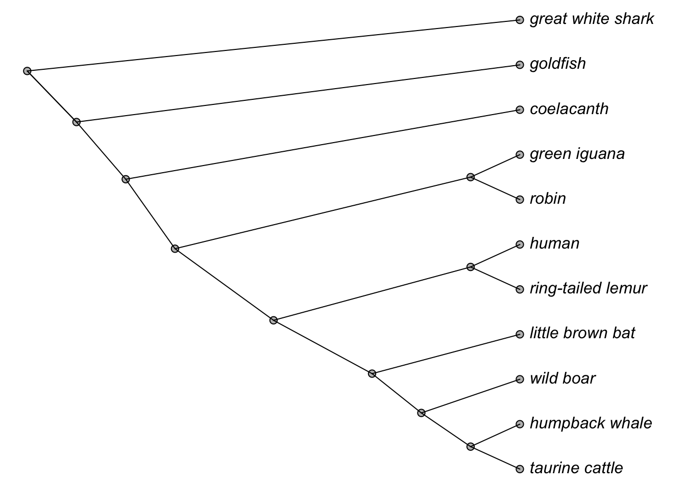
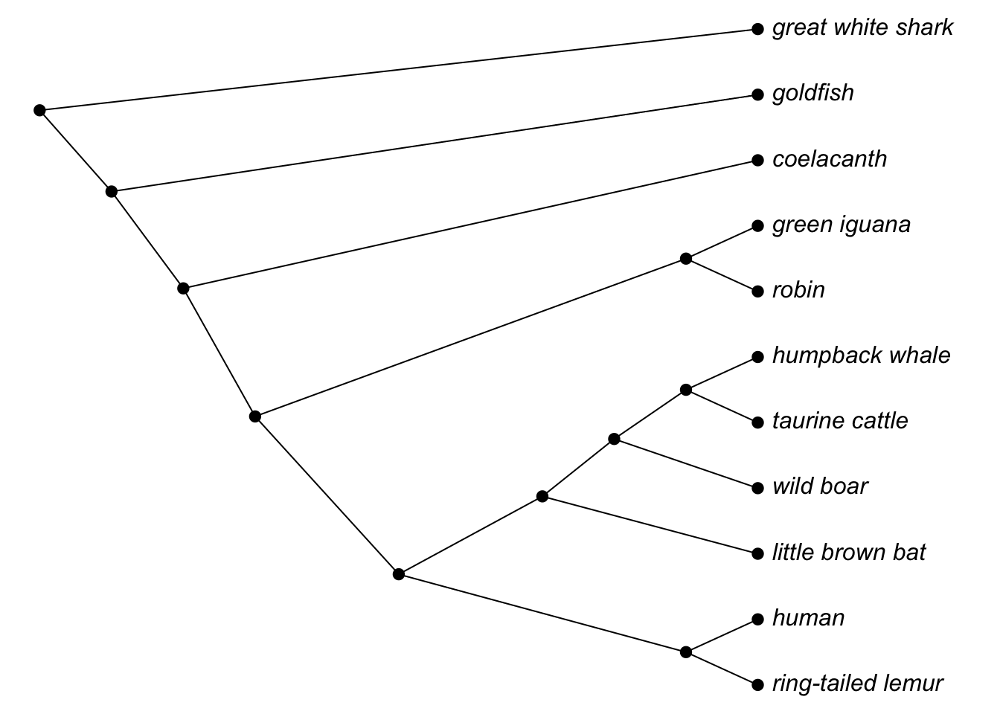

# I will repeat this for the beginning of each lesson
# but it will soon become routine.
pacman::p_load(phytools,geiger,ggplot2,tidyverse,SpeciesClassifyR)Lecture 1B
Lecture_1
Continuing our work with manipulating trees
Load your packages again:
Where we left off:
So we left off with the list of challenge names that I gave you to make a tree with. To start this lesson I just wanted to give you a rundown of how I would make the tree.
challenge.names [1] "Bos_taurus" "Carassius_auratus" "Carcharodon_carcharias"
[4] "Homo_sapiens" "Iguana_iguana" "Latimeria_chalumnae"
[7] "Lemur_catta" "Megaptera_novaeangliae" "Myotis_lucifugus"
[10] "Sus_scrofa" "Turdus_migratorius" First let’s turn these all to common names so we can get a better handle on them.
common.names <- c('taurine_cattle','goldfish','great_white_shark','human','green_iguana','coelacanth','ring-tailed_lemur','humpback_whale','litle_brown_bat','wild_boar','robin')
text <- "((((((ring-tailed_lemur,human),(little_brown_bat,(wild_boar,(taurine_cattle,humpback_whale)))),(robin,green_iguana)),coelacanth),goldfish),great_white_shark);"
vert.tree <- phytools::read.newick(text = text)
plotTree(tree = ladderize(vert.tree),no.margins=F)
mtext(text = "Figure 1: Our vertebrate 'handmade' tree with common names",side = 1,line = -1,col = "black",adj = 0.1,cex=0.9)
A few things to note about newick strings:
- They need to end with the little ‘;’ to make a functional string.
- They also need to have a ‘()’ around the entire grouping as the final group.
- I wrote it starting with the group I thought were the closest in terms of relatedness but you can start with the outgroup and work in as well.
More working with trees:
Ok so for the remainder of this lesson I want to go through some examples of working with trees and how to visualize them. We will get into what we can learn from a tree next week but for now I want to make sure we are clear on what they represent.
Let’s make a simple tree say A, B, C. Everyone’s favorite three taxa tree. We can again make it using a newick string but there are other functions we will learn in time.
# Make a tree using newick again for sake of learning.
four_tax_tree <- "((A,B),C);"
par(mar=c(2,2,2,2))
plot(x = read.newick(text=four_tax_tree),root.edge = T,label.offset = 0.1)
Alright we have a basic little tree. What do you notice about it? You might notice the following:
All the tips line up to the same place on the graph.
You might think that A and B are more closely related to one another than C.
You might notice the branching pattern and that this tree is ‘fully-resolved’, meaning that each set of taxa perfectly merges into one. There are not branching points where three taxa meet at the same point.
These are all great things to notice about this tree but maybe a better way to draw this tree is like this.
par(mar=c(2,2,2,2))
plot(x = read.newick(text=four_tax_tree),type="unrooted",label.offset = 0.01)
All I have done here is change how we are viewing the tree. I removed the root of the tree so what we are seeing now is the relative branch lengths of all the ‘branches’ of the tree. This can be useful when we want to see how distant a group/clade is from another.
We cannot tell the direction of evolution from this graphic but we can tell that taxa C has undergone more evolution that A and B. We also cannot tell if A is more closely related to B or C in this schematic. This is a product of an unrooted tree but again it can be useful to see were all the groupings are.
Throughout the lectures of this course we will be looking into different ways to visualize trees as well as the data on them. However the basic understanding of the information contained within the structure of the phylogenetic tree is very important. We will endeavor to understand more of that as we move through the additional lectures of this course.
Ok let’s shift gears a little bit and talk through the actual function that is used to plot phylogentic trees. Experienced R users can skip this part if they would like but I wanted to touch on this early. I mention it here because there are a handful of reasons why you might need to understand internal workings of how trees are depicted. For example, I recently worked on a blog post where I had to make a very complex phylogenetic tree, where I layered many different elements over the tree. Knowing the internals of the phylo object was very helpful. Those curious can view that tree here
So lets first just grab out little vertebrate tree phylogeny vert.tree.
plotTree(tree = ladderize(vert.tree),no.margins=F)
pp <- pp<-get("last_plot.phylo",envir=.PlotPhyloEnv)
# let's look at it's structure:
str(vert.tree)List of 5
$ edge : num [1:20, 1:2] 12 13 14 15 16 17 17 16 18 18 ...
$ Nnode : int 10
$ tip.label : chr [1:11] "ring-tailed_lemur" "human" "little_brown_bat" "wild_boar" ...
$ edge.length: NULL
$ node.label : NULL
- attr(*, "class")= chr "phylo"
- attr(*, "order")= chr "cladewise"Now R knows how to visualize these trees as just a series of lines and points but we are going to go through line by line and make this ourselves just so we understand how to interact with the tree if needed.
First lets just get used to playing with the base R plotting environment a bit. Let’s plot some points and just some text to see how it works.
plot.new()
#Let's just visualize our space a little bit.
points(x=0,y=0,pch=21,cex=2)
points(x=0,y=1,pch=21,cex=2)
points(x=1,y=0,pch=21,cex=2)
points(x=1,y=1,pch=21,cex=2)
text("Hey look some points and text",x=0.5,y=0.5,cex=2)
Ok now let’s plot the tree without plotting it
plotTree(tree = ladderize(vert.tree),no.margins=F,plot=F) # Remember this opens the plot# Device, but does not plot a tree.
pp <-get("last_plot.phylo",envir=.PlotPhyloEnv) # This pulls the points from the environment. Ok now lets plot this tree literally line by line. Below are a series of chunks that will grow as we add lines of code to them. I will aim to delineate the new code with this ##################################################################. If you see that, then the below code is new.
plotTree(tree = ladderize(vert.tree),no.margins=F,plot=F) # Remember this opens the plot
# Device, but does not plot a tree.
pp <- pp<-get("last_plot.phylo",envir=.PlotPhyloEnv) # This pulls the points from the environment.
##################################################################
# New code to add our points.
# First our tip points!
points(x=pp$xx[1:Ntip(vert.tree)],y=pp$yy[1:Ntip(vert.tree)],bg="grey",pch=21)
# Now our internal node points
points(x=pp$xx[1:vert.tree$Nnode+Ntip(vert.tree)],y=pp$yy[1:vert.tree$Nnode+Ntip(vert.tree)],bg="grey",pch=21)
# Now lets add some lines connecting them all
# Let's just do the first line, then we will do the rest
lines(pp$xx[vert.tree$edge[1,]],
pp$yy[vert.tree$edge[1,]])
Ok this is starting to actually look like a tree! But how will we get the rest of the lines? Well remember that the phy object is composed of both nodes, points and edges. If we run this function vert.tree$edge we will see that it returns a matrix that is 20 rows long with two columns each. Why two columns well because you are connecting two points!
So knowing that we can write a simple for loop to go through all the edges of our tree. Or at least the rest of them in this plot.
plotTree(tree = ladderize(vert.tree),no.margins=F,plot=F) # Remember this opens the plot
# Device, but does not plot a tree.
pp <- pp<-get("last_plot.phylo",envir=.PlotPhyloEnv) # This pulls the points from the environment.
# First our tip points!
points(x=pp$xx[1:Ntip(vert.tree)],y=pp$yy[1:Ntip(vert.tree)],bg="grey",pch=21)
# Now our internal node points
points(x=pp$xx[1:vert.tree$Nnode+Ntip(vert.tree)],y=pp$yy[1:vert.tree$Nnode+Ntip(vert.tree)],bg="grey",pch=21)
# Now lets add some lines connecting them all
# Let's just do the first line, then we will do the rest
lines(pp$xx[vert.tree$edge[1,]],
pp$yy[vert.tree$edge[1,]])
##################################################################
# New Code: A For Loop for adding the lines
for (i in 1:nrow(vert.tree$edge)){
lines(pp$xx[vert.tree$edge[i,]],
pp$yy[vert.tree$edge[i,]])
}
Woah! That looks really nice! but it’s missing something right? What about the names of the taxa in our tree. Well again that is stored in the phy object and we can pull them out.
plotTree(tree = ladderize(vert.tree),no.margins=F,plot=F) # Remember this opens the plot
# Device, but does not plot a tree.
pp <- pp<-get("last_plot.phylo",envir=.PlotPhyloEnv) # This pulls the points from the environment.
# First our tip points!
points(x=pp$xx[1:Ntip(vert.tree)],y=pp$yy[1:Ntip(vert.tree)],bg="grey",pch=21)
# Now our internal node points
points(x=pp$xx[1:vert.tree$Nnode+Ntip(vert.tree)],y=pp$yy[1:vert.tree$Nnode+Ntip(vert.tree)],bg="grey",pch=21)
# Now lets add some lines connecting them all
# Let's just do the first line, then we will do the rest
lines(pp$xx[vert.tree$edge[1,]],
pp$yy[vert.tree$edge[1,]])
for (i in 1:nrow(vert.tree$edge)){
lines(pp$xx[vert.tree$edge[i,]],
pp$yy[vert.tree$edge[i,]])
}
##################################################################
# Therefore we need to do this for each tip of the tree, let's start with the first one
text(pp$xx[1],pp$yy[1],
gsub('_',' ',vert.tree$tip.label[1]),
pos=4,
font=3)
Ok I want to walk through this a little bit as well just to show where the pieces are coming from and it will hopefully show the entire flow. First remember that we have 11 tips on our tree. Don’t believe me check it with Ntip(vert.tree)……I’ll wait……ok so yeah we have 11 tips on this tree. The last addition of this code reads as follows.
Using the text function place the text value at a ‘x’ position of pp$xx[1] and a ‘y’ position of pp$yy[1]. Why the [1], well that corresponds to tip 1. Phylo objects always start counting from the tips i.e. 1:Ntips(phylo) before counting the nodes.
Once you have the position the actual text value is simply label 1 from the tree but we used the gsub() function to replace the underscore with a space.
Finally the pos and font arguments are just arguments to tell where to place the text, in this case on the right side of the point and then using an italics font.
Ok now let’s write a simple for loop to plot the rest of the labels.
plotTree(tree = ladderize(vert.tree),no.margins=F,plot=F) # Remember this opens the plot
# Device, but does not plot a tree.
pp <- pp<-get("last_plot.phylo",envir=.PlotPhyloEnv) # This pulls the points from the environment.
# First our tip points!
points(x=pp$xx[1:Ntip(vert.tree)],y=pp$yy[1:Ntip(vert.tree)],bg="grey",pch=21)
# Now our internal node points
points(x=pp$xx[1:vert.tree$Nnode+Ntip(vert.tree)],y=pp$yy[1:vert.tree$Nnode+Ntip(vert.tree)],bg="grey",pch=21)
# Now lets add some lines connecting them all
# Let's just do the first line, then we will do the rest
lines(pp$xx[vert.tree$edge[1,]],
pp$yy[vert.tree$edge[1,]])
for (i in 1:nrow(vert.tree$edge)){
lines(pp$xx[vert.tree$edge[i,]],
pp$yy[vert.tree$edge[i,]])
}
text(pp$xx[1],pp$yy[1],
gsub('_',' ',vert.tree$tip.label[1]),
pos=4,
font=3)
##################################################################
for (i in 2:Ntip(vert.tree)){ #Note: I am using 2 since we already did 1
text(pp$xx[i],pp$yy[i],
gsub('_',' ',vert.tree$tip.label[i]),
pos=4,
font=3)
}
Well thats not bad for doing it line by line. But of course we can do better than that and make a function. Maybe something like this below. I am not going to go into detail on functions yet, that can be another lesson itself when we get more advanced but for now here is a simple ‘functioned’ version of the above code.
SuperPhylogenyPlotter <- function(phy){
plotTree(phy,plot=F)
pp <- get('last_plot.phylo',envir = .PlotPhyloEnv)
points(pp$xx,pp$yy,pch=21,bg="black")
#grid()
for(i in 1:nrow(phy$edge)){
lines(pp$xx[phy$edge[i,]],
pp$yy[phy$edge[i,]])
}
for(i in 1:Ntip(phy)){
text(pp$xx[i],pp$yy[i],
gsub('_',' ',phy$tip.label[i]),
pos=4,
font=3)
}
}
SuperPhylogenyPlotter(vert.tree)
Pretty nifty.
Wrapping up
Ok so we covered alot in this lesson. Granted it was mostly programming but I am hoping that you are getting more comfortable with working in the R environment. Next week we will actually be digging into what we can learn from phylogenetic trees, and how we can compare species with them.
For now I leave you with this challenge. Using the data('eel.tree') in the Phytools package I want you to generate three different visualizations of the tree. Some ideas might be playing with line colors, overlapping points, changing the orientation, or making something more complex. The world is your oyster.
if you need help, I recommend the ?plotTree page for some ideas. Try to develope the code yourself rather than copy and pasting.